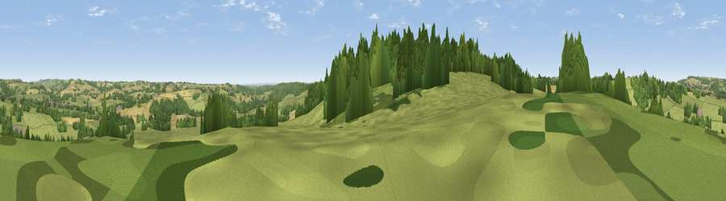

Foxcote Hill
#24395 in England · top 49% of its area beats it · near AndoversfordWhere it is
The exact computed spot (SP 01183 17293). Click the marker for map links.
The view, rendered

A 360° render of this exact spot computed from the terrain model, tree cover and land cover — summer colours, afternoon light, calibrated against photographs of famous viewpoints. Real trees, hedges and buildings will differ in detail.
The panorama
Grey silhouette: terrain skyline in each direction (720 bearings, Earth curvature and refraction included). Dashed green: skyline with trees (+15 m) and buildings (+8 m) as obstacles. Blue strip: how far the ground is visible on each bearing.
Where the view opens
Wedge length = distance to the farthest visible ground on that bearing (vegetation-aware). Rings at 10, 25 and 50 km.
What fills the view
58% grassland · 30% woodland · 12% cropland ·
Angular shares of the visible panorama (visual magnitude), not map area. Landscape diversity 0.42 (0–1 Shannon).
Key numbers
More beautiful places nearby
The staircase of upgrades: each row has a higher view potential than everything closer. Driving times are estimates from straight-line distance, calibrated against real road routing — check an actual route before setting out.
| Place | Direction | Drive | Score |
|---|---|---|---|
| Viewpoint near Withington | S · 1 km | ~4 min | 61.0 |
| Viewpoint near Charlton Kings | WNW · 4 km | ~9 min | 70.0 |
| Viewpoint near Leckhampton | WNW · 5 km | ~12 min | 71.8 |
| Viewpoint near Prestbury | NNW · 6 km | ~13 min | 72.3 |
| Viewpoint near Leckhampton | WNW · 6 km | ~13 min | 73.7 |
| Viewpoint near Leckhampton | W · 6 km | ~14 min | 77.8 |
| Viewpoint near Cleeve Hill | NNW · 9 km | ~18 min | 79.6 |
| Cleeve Hill | NNW · 9 km | ~19 min | 79.8 |
51.85423, -1.98423 · source: osm peak · position refined by local search. Computed location — check access rights before visiting.